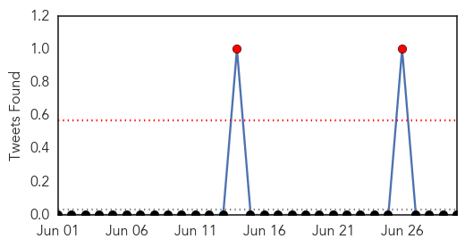
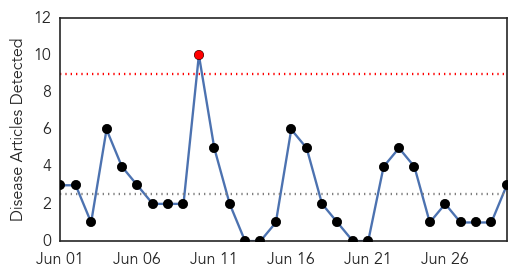
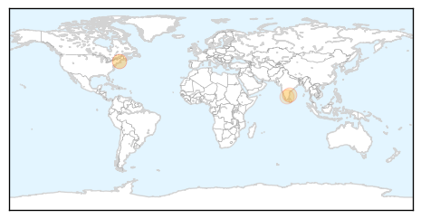

Dengue Fever
30-Day Web Trend
3 alerts, 4 warnings

30-Day Twitter Trend
2 alerts, 0 warnings

Article Locations

Article Confidences

Top Articles:
- 0.995
- Schools closed over dengue outbreak
- 0.767
- Aussies getting sick overseas: Bali, Thailand, Philippines, Spain
- 0.732
- Dengue numbers swelling, says ministry, National, Phnom Penh Post
- 0.724
- Dengue fever mosquito alert for southern Europe
- 0.712
- Bali, Thailand, Philippines, Spain
- 0.631
- Primary healthcare to be part of curriculum
- 0.515
- Special helplines for monsoon-related diseases
Top Tweets:
-
No tweets found for Jun 30, 2015
Hepatitis
30-Day Web Trend
1 alerts, 0 warnings

30-Day Twitter Trend
0 alerts, 0 warnings

Article Locations
Article Confidences

Top Articles:
Top Tweets:
-
No tweets found for Jun 30, 2015